Создание игр в Roblox Studio
Проработка деталей ландшафта и окружения
Установка плагина Brushtool
Это занятие будет полностью посвящено работе с ландшафтным плагином Brushtool, который позволяет добавить растительность и различные декоративные объекты на карту.
Для начала работы установим плагин - найдем его через Toolbox в разделе Plugins и добавим в редактор.
Если плагин в ToolBox найти не получается, его можно установить из браузера по ссылке: Brushtool

После добавления плагина откроется новое дополнительное окно - Brushtool, это окно, в котором будет происходить настройка инструмента.
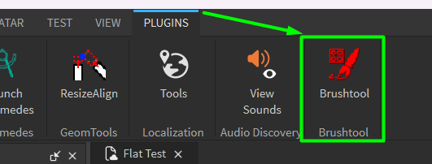Этот плагин дублирует механику работы с растительностью из Unreal Engine и Unity, которая по умолчанию отсутствует в Roblox Studio - с его помощью можно «высаживать» на ландшафт множество одинаковых объектов одновременно, создавая таким образом леса, горные массивы, цветочные поля и т.д. за 10-15 минут.
Высаживаем и оформляем растительность
Высадим деревья
Найдём модель дерева, с которой мы будем работать и разместим ее на сцене
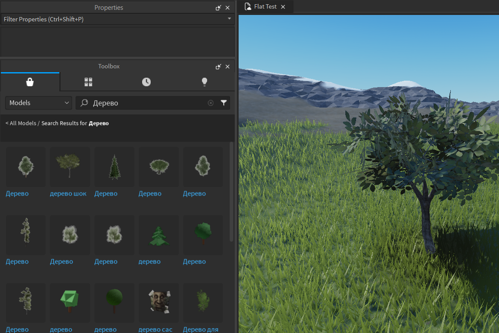В первой части занятия нам необходимо познакомиться с настройками плагина и последовательно исправить неподходящие изначальные настройки.
В верхней части находится кнопка активации плагина - как только она будет нажата, мы сможем высаживать объекты в сцене. Активируем плагин и попробуем его использовать.
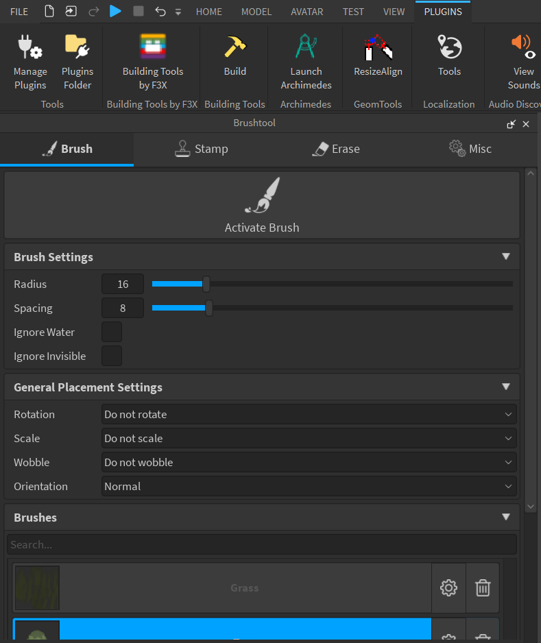На сцену добавятся деревья, встроенные в плагин по умолчанию, они не самые красивые и их плотность в разы выше, чем нужна.
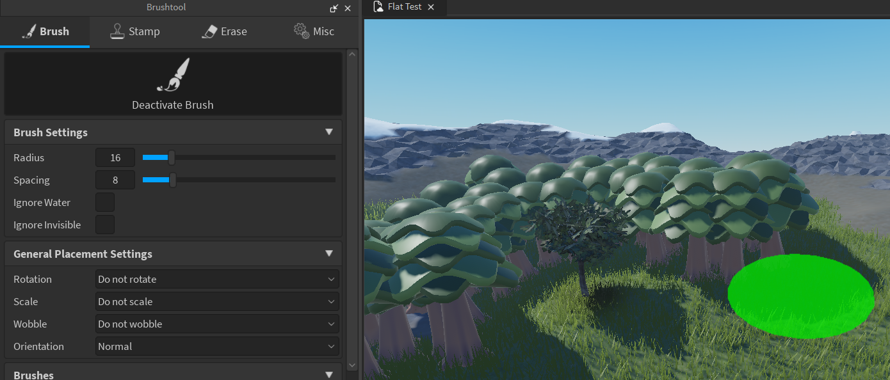Выберем растительность - заменяем деревья
Начнем изменение настроек плагина. В первую очередь заменим деревья, которые будем высаживать, для этого выберем дерево, добавленное из тулбокса и обратим внимание на нижнюю часть плагина - в ней появилось предложение добавить выбранное дерево в палитру кистей, нажмем Add. Дерево добавится в список моделей, и чтобы высаживать только его, снимем выделение с базовой модели дерева - для этого нажмем на него левой клавишей мыши.
При необходимости можно выровнять повороты дерева - в окне Properties поменяем его параметр Origin Orientation.
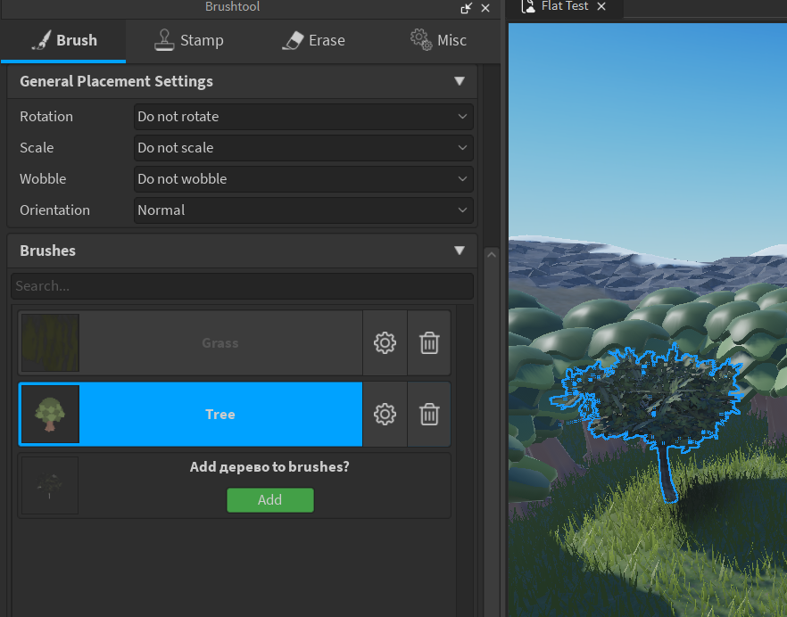Попробуем высадить эти деревья - результат получится лучше, но полученный лес достаточно нереалистичен.
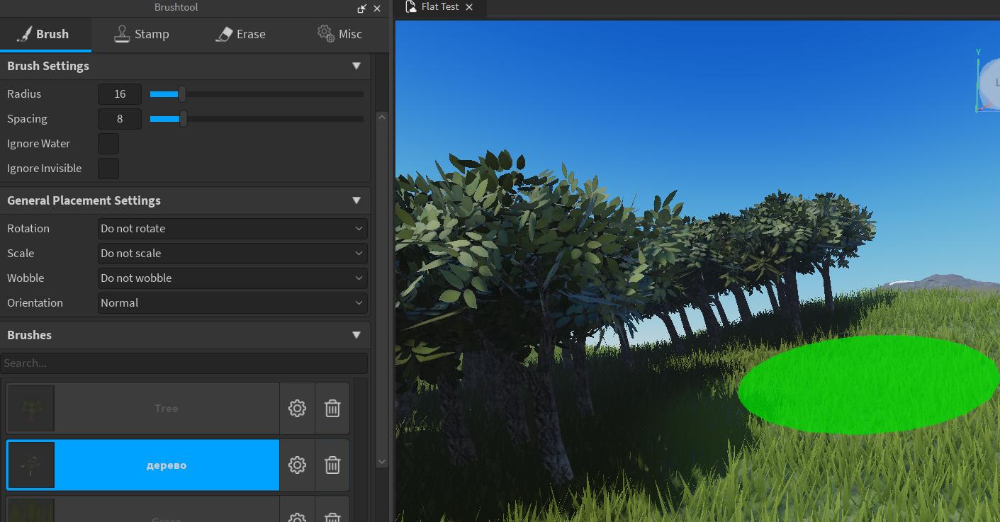Настройки растительности с помощью Brushtool
Чтобы это исправить, необходимо познакомиться и поработать с настройками.
Рассмотрим настройки Brushtool подробнее:
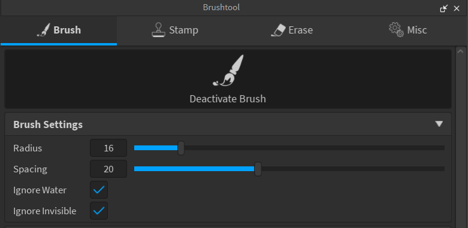- Radius позволяет изменить радиус работы кисти.
- Spacing указывает минимальное расстояние между высаживаемые объектами: чем он меньше, тем ближе будут располагаться объекты. Используем этот параметр для изменения плотности инструмента.
- Параметры Ignore Water u Ignore Invisible можно пропустить.
Параметры из раздела General Placement Settings добавляют случайные трансформации к размешаемым моделям:
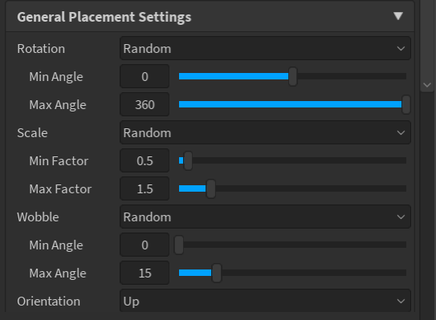- Rotation поворачивает каждый объект на случайный угол от минимального до максимального значения.
- Scale случайным образом масштабирует каждый новый объект. Оптимальные настройки: 0.5-1.5.
- Wobble наклоняет объект вперёд или назад. Оптимальные настройки: 0-15.
- Параметр Orientation определяет, как будут бысаживаться объекты относительно наклона поверхности. По умолчанию они располагаются перпендикулярно участку ландшафта, на котором созданы (параметр Normal). Это подходит для травы, но для деревьев необходимо поставить значение Up.
После установки правильных настроек лес станет выглядеть гораздо реалистичнее:

Практика - добавляем и настраиваем растительность на своей карте
Самостоятельная задача - добавить на карту кусты и траву. Найти подходящие параметры для этих объектов и добавить их к участку карты, на котором они работают.
Для растительности такого рода можно не изменять параметр Orientation и оставить его в значении Normal.
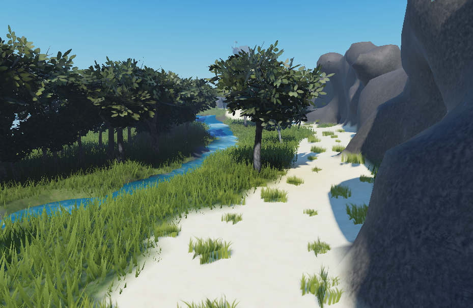Создаем скалистый участок местности
После того, как инструмент стал понятен, можно перейти к более продвинутым способам его использования. Найдем модель камней и разместим ее на карте, после чего добавим в палитру Brushtool.
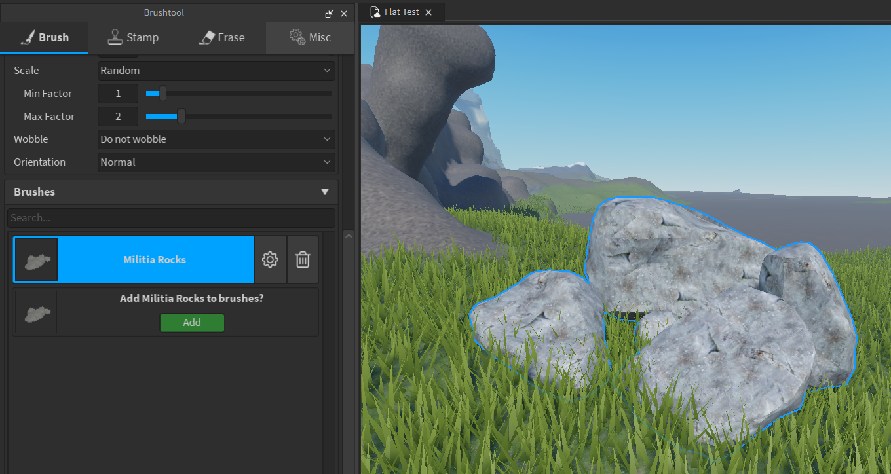Создадим скалистый участок местности: изменим значение параметра Spacing на 17 и выше, чтобы не размещать слишком много камней, разместим их в подходящей местности и при необходимости повернём, отмасштабируем и переместим камни вручную.
Этот подход очень часто используется в игровой индустрии для создания сложных скалистых участков из нескольких базовых моделей камней.
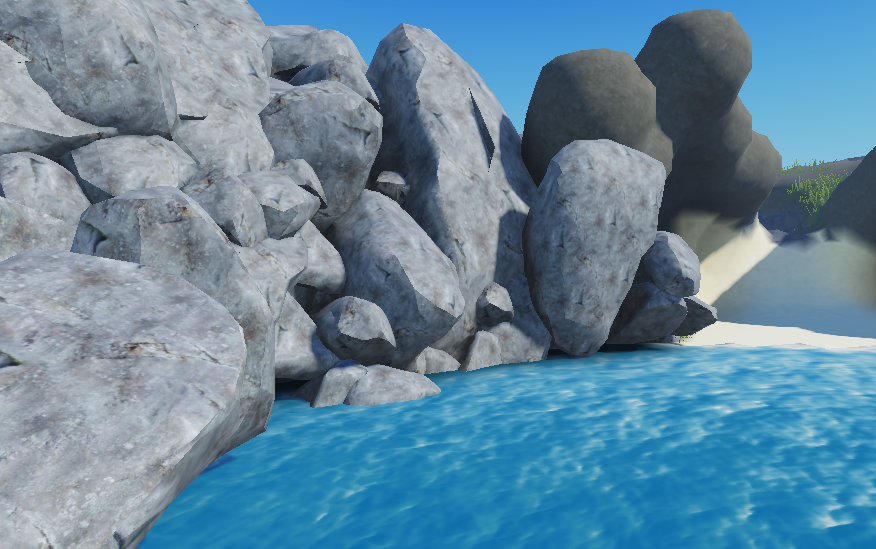Добавляем наборы элементов
В последней части занятия необходимо поработать с набором объектов окружения.
Как добавить набор объектов
В тулбоксе найдем модель под названием Forest Pack и добавим ее на сцену:
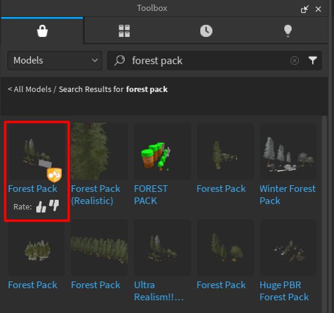Forest Pack - это набор уже готовых моделей, которые можно свободно использовать в дизайне ваших локаций. По умолчанию объекты в этом паке слишком большие, поэтому уменьшим размер всех моделей в нем примерно на 15-30%
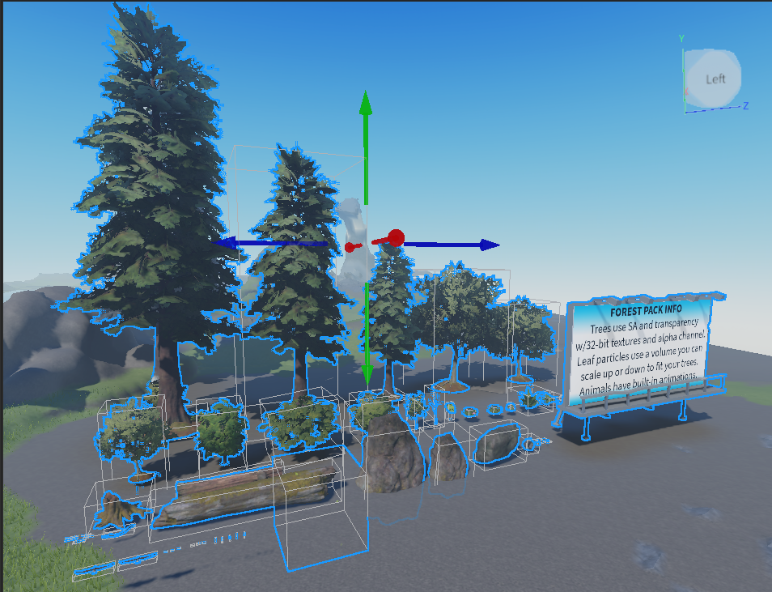Практика работы с растительностью
Необходимо закрепить работу с объектами из данного набора и доработать дизайн локации. При необходимости можно брать любые объекты из тулбокса, чтобы добавить уникальности отдельным участкам карты.
Домашкаа 😁
В домашнем задании необходимо закрепить навыки работы с плагином и реализовать одну или несколько локаций на выбор:
- Лес и луг с полевыми цветами.
- Дом среди поля подсолнухов.
- Скалистый берег (*с разбившимся кораблем)
- * Поле битвы (с помощью Brushtool можно размещать не только растения).
* Задания со звездочкой относятся к высокому уровню сложности, только для тех, кто считает себя PRO мастером!